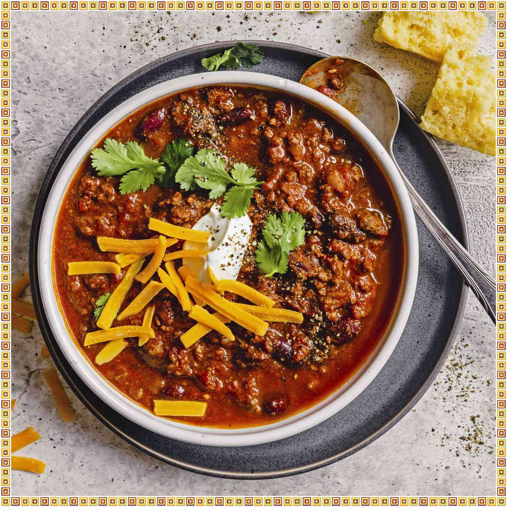

Chipotle Chili

Emily's Chipotle Chili is a smoky and spicy delight, combining tender meat, a medley of beans, and chipotle peppers for a rich and satisfying flavor. Perfect for chilly nights, it's best enjoyed with a dollop of sour cream, shredded cheese, and fresh cilantro.
Ingredients
- 1 lb hot Italian sausage
- 5 tbsp chili powder
- 1 tsp ground coriander
- 1 large diced onion
- 1 15 oz can tomato sauce
- 1 tsp salt
- black pepper to taste
- 2 lbs ground beef
- 1 tbsp ground cumin
- 2 cloves minced garlic
- 1 (28 oz) can diced tomatoes
- Optional: 1 (14 oz) can kidney beans
- 2 tsp minced chipotle peppers in adobo sauce
- 1 (6 oz) can tomato paste
Steps
- Cook sausage and ground beef in a large pot over medium-high heat until lightly browned and crumbly. When the meat has released its grease and has begun to brown, drain off accumulated grease and season with chili powder, cumin, and coriander. Cook and stir for 1 minute until fragrant, then stir in the garlic and onion. Cook until the onion has softened and turned translucent, about 4 minutes.
- Stir in the diced tomatoes, tomato sauce, kidney beans, chipotle peppers, salt, and pepper. Bring to a simmer, then pour the chili into a slow cooker. Cover and cook on Low for 8 to 10 hours. Stir in tomato paste an hour before the chili is done.